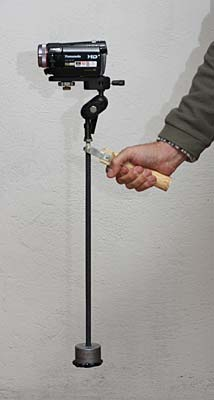
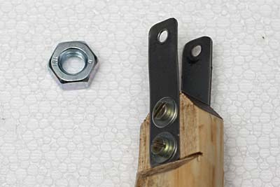
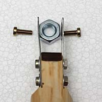
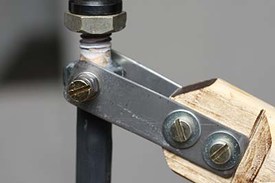
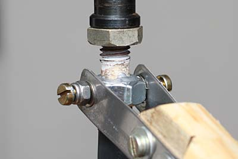
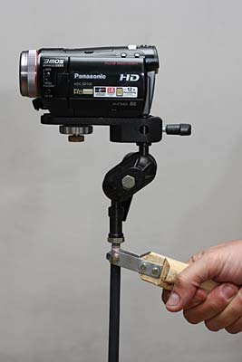
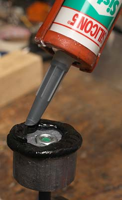

Photo & projects
STEADY-CAM made simple
How to make a simple stabilizer for video shooting. "DIY" by R.Chirio
November 2008
Video cameras are becoming smaller and smaller and despite all having stabilized optics, it is not easy to achieve stable shots, this is because there is no longer a significant mass that in some way would help reduce vibrations.
To smooth the movements nothing remains but to weigh down the video camera, thus making a simple steady-cam.
The structure is very simple, made with a threaded bar in iron or stainless steel of 10mm, long 40/50cm, covered with heat shrink tubing.
The grip knob is made of wood, while the joint is easily obtained by drilling and threading a 10mm bolt.
For video attachment a 155 Manfrotto plate is used, which allows fixing with sliding, so as to facilitate the balancing of everything.
The 1200g counterweight is made of lead. The moment of inertia is given by the product of the length of the bar times the weight. We get the same effect with shorter bars and greater weights or vice versa.

Realization
- The fork is made with two INOX plates 60 x 15 dim. thickness 1mm. fixed on the wooden handle.
- The mounting holes are all 4mm.
- the handle is made of wood with diameter 25/30mm and length of at least 15cm.

- The 17x8 nut for 10mm threaded rod must be drilled 3.2mm and then threaded 4MA.
- The internal measurement of the fork must be 18mm. to provide space for the two 0.5mm washers.

- Detail on final assembly.
- The lower part of the threaded rod is already covered with heat shrink tubing, on the upper and terminal part of the rod a second part of 3/8 inch threaded rod 35mm long was soldered, necessary to screw on accessories with photographic thread, such as heads and fixing plates.

- Detail on final assembly.
- The 4mm screws must be tightened strongly to lock the 10 nut on the threaded rod.
- The 4mm self-locking nuts will be tightened to slightly friction the fork with the nut. Useful to lubricate with dry Teflon.

- Detail on final assembly.
- The video camera before being locked in position must be moved back and forth to find the best balance. Typically the bar should be in vertical position.
When we move on foot, the movement tilts will be compensated by the articulated handle, small vibrations will be damped by the muscles of the operator's arm.
The best operation would be with the pivot point closest to the Video camera, in this case the Manfrotto joint facilitates positioning, but penalizes the effect of the stabilizing bar.
Thanks to the Manfrotto ball head it is possible to hold the bar horizontally holding it with two hands, always with good vibration reduction.

- Detail on the lead weight, which must be drilled 10mm and locked with a nut.
- Protection with abundant black silicone prevents the lead weight from hitting the floor directly or against any other object.
- Better to cover the entire weight with a black neoprene tube.
- The lead weight is easily made by melting lead scrap and pouring the molten lead into a metal container. All with a certain amount of care!

Final thoughts
- It does not claim to be as functional and complete as a Steadycam mounted on the operator's body, but it allows making good shots with stable and smooth movements.
- The ideal use is for moving shots in small spaces or to follow the movement of people, maintaining a subjective point of view.
- The cost of the build is very low and requires no special work or equipment, only the minimum necessary for those already capable of doing mechanical work.
- To be tried with different lengths and weights, ideal to position the pivot point as close as possible to the base of the video camera, this allows reducing the ballast weight at the base.
© Roberto Chirio: all rights reserved.